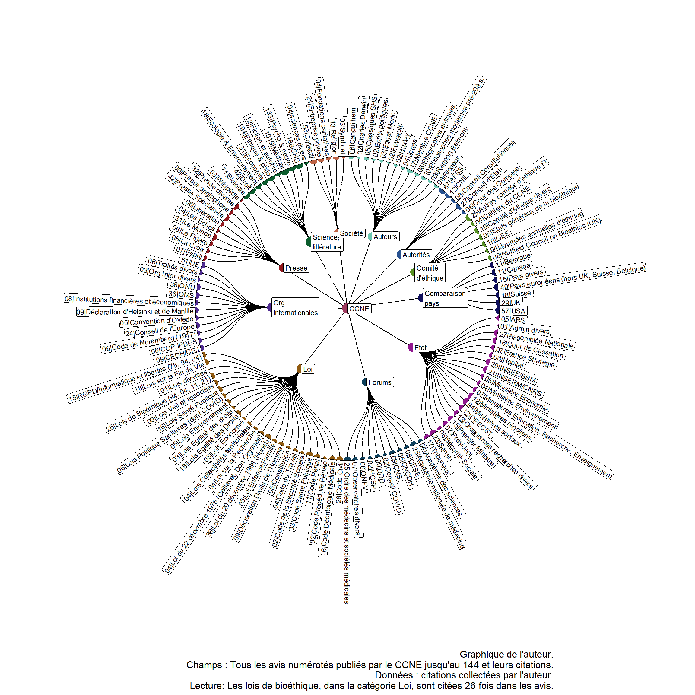

Résumé des citations des avis du CCNE
Résumé de la méthodologie et des données
On a collecté l’ensemble des citations dans les 144 avis du CCNE. Chaque citation a été mise en forme de la façon suivante : dans quel avis elle a été utilisée, quel est son auteur moral (ministère, sénat etc.) ou son domaine (article médical par exemple). De plus, pour rendre la lecture plus aisée, j’ai découpé chaque citation en différentes catégories :
- Auteurs : personne suffisamment importante dont le nom a été relevé en propre au moment de la collecte. Cela concerne aussi bien des classiques (philosophes antiques, ou modernes d’avant le 20ème s.), que les auteurs les plus cités au cours des avis (Ricoeur, Canguilhem) que les membres du CCNE cités au sein des avis. - Autorités : Autorités administratives publics ou indépendantes, au sens de la loi de 2016, qui un pouvoir de contrôle effectif. - Comité d’éthique : Tout autre comité d’éthique, français ou d’un autre pays. - Comparaison pays : Pays qui font l’objet d’une comparaison dans l’un des avis. - Etat : Ministères, Parlement, Président, Premier Ministre, Administration (à l’exclusion des autorités indépendantes et/ou consultatives) - Forums : Organisations consultatives associées à une posture de conseils au gouvernement et d’expertise (Forums Hybride, Callon et al. 2001) comme le CCNE, les académies ou l’Ordre des médecins. - Loi : Codes de lois et lois votées au Parlement, regroupées par thématique. - Organisations Internationales : Toutes les organisations internationales incluant : institutions européennes (de l’UE ou Conseil de l’Europe), onusiennes (on a différencié l’OMS des autres, regroupées sous le terme ONU), économiques/financières (OCDE, FMI, Banque Mondiale), olympiques (CIO). - Presse : Journeaux de la presse quotidienne et bulletins spécialisés (médicaux ou en santé publique). - Science, littérature : livres et articles scientifiques, Oeuvres de fictions ou autobiographiques, regroupés par domaine. - Société : Société civile, regroupée dans des catégories simples : collectifs, syndicats, religion, fondations caritatives
En plus des visualisations présentes dans l’annexe numérique du mémoire, je présente ici les résultats les plus agrégés des citations. Pour une facilité de lecture, plutôt que parler citation par citation, ou même catégorie par catégorie, j’ai regroupé les citations entre elles, selon une logique qui dépend de la catégorie. Ainsi les lois ont été regroupé par leur thématique (lois de bioéthique, lois sur l’égalité des droits, sur la santé publique etc.), pour la presse un critère de fréquence a été attribué pour montrer les titres les plus importants et regroupés les autres. A l’avenir, je parlerais de noms détaillés pour la forme collectée et de noms simplifiés pour la forme regroupée.
Citations les plus importantes sur l’ensemble de l’histoire du CCNE
Les deux graphiques suivants permettent de se donner une idée des citations les plus importantes du CCNE sur la totalité des quarantes dernières années. Ces deux graphiques construis sur le même principe : chaque citation (avec son nom simplifié) est relié à sa catégorie, elle même relié au CCNE, dans une relation hiérarchique.
On y trouve les résultats suivants : - Auteurs : les membres du CCNE sont la catégories d’individus la plus cité avec 17 citations. Ensuite, ce sont les philosophes pré modernes mais dont aucun n’est cité plus d’une fois au cours des 144 avis (Spninoza, Nietzsche). Deux auteurs de la seconde moitié du XXème s. sortent vraiment du lot : Canguilhem et Ricoeur. Il faut quand même noté que le nombre de citations total de ces auteurs est très faible par rapport à la masse de citations scientifiques et littéraires, comme on peut le comparer avec les citations ‘Science, littérature’. - Science, littérature : en effet les sciences médicales sont largement les plus cités, avec un total de 1019 articles ou livres cités. La majorité des avis citent au moins un article médical, biologique, ou psychiatries/psychologies.En seconde place, les sciences humaines sont autant citées que la philosophie et l’éthique. Le droit, l’économie et l’écologie sont assez minoritaires : seulement 21 avis citent des ouvrages de droit, et seuls 16 des articles d’économie et seulement 2 avis citent des articles d’écologie (avis 133 par exemple). On a aussi quelques références à des oeuvres de fiction ou autobiographiques. En particulier, sur les questions “sensibles” comme l’autonisme, sur une période récente à partir de l’avis 102, des oeuvres autobiographiques écrites par des personnes sur le spectre autiste sont cités : c’est une première de tout les avis. On peut conclure qu’il n’y a pas consciemment de la part des membres du CCNE une référence explicite à certains philosophes. Canguilhem et Ricoeur sont les plus cités, mais combiné ils ne dépassent pas la douzaine d’avis faisant directement référence à eux. Le CCNE semble plutôt composé ses avis, de façon pragmatique, selon l’idée énoncé dès les premiers avis. Les citations scientifiques sont à l’image des membres mobilisés du CCNE : biomédical et sciences humaines. Par contre, il est intéressant de noter que le droit et l’économie sont très peu mobilisés : sciences de gouvernement c’est par leurs étatiques (tribunaux, rapports) qu’on peut y déceler leur influence, plutôt que par le pôle académique. - Autorités : Les autorités les plus cités sont très largement les autorités de sécurité sanitaire (AFSS) en particulier ce qui est actuellement dénommé comme l’Agence de la biomédecine (ABM) et la Haute Autorité de Santé (HAS). Au total 38 avis citent une expertise d’une des AFSS, pour un total de 67 citations. Le conseil d’Etat est largement l’institution la plus citée : 19 avis y font référence pour 27 citations. Cela vient probablement des forts historiques liens entre les deux institutions. - Forums : Sans trop de surprise les forums les plus citées sont l’académie nationale de médecine, l’ordre des médecins, le conseil national du Sida. Le reste est composé du CESE, du défenseur des droits, et de divers observatoires (OFDT, ONFV, CNCDH). - Etat : Le CCNE cite principalement les directions des ministères sociaux, et rapports commandités en leurs noms, puis le parlement (Assemblée nationale, Sénat, OPCEST) et pour finir les tribunaux (Cour de cassation et autres tribunaux). Le premier ministre ou le président sont plutôt rares. Le Premier ministre dans le cas de rapports qu’il a commandité, le président à l’occasion des lois de bioéthique (Etats généraux de la bioéthique).
Comité d’éthique : Principalement le Groupe d’Ethique Européen (GEE) mis en place par la Commission Européenne, les espaces éthiques régionaux, le comité d’éthique du CNRS (COMETS/COPE) et le comité d’éthique de la Nuffield Foundation.
Comparaison pays : Les institutions américaines et britanniques sont largement les plus citées (respectivement 36 et 20 avis qui les citent), viennent ensuite les pays européens (regroupés ils apparaissent dans une quinzaine d’avis, avec la Suisse et la Belgique en premier lieu). USA : domination médicale, Suisse : francophone et leader pharmaceutique, Belgique : Fr, UK : ?.
Loi : Codes de lois et lois votées au Parlement, regroupées par thématique. Code de la santé publique, code civil, les lois de bioéthique (particulièrement 1994 et 2004) et surtout la loi Huriet la plus citées en elle même. Puis viennent ensuite les lois thématiques : Egalités des droits, santé publique, fin de vie, RGPD/informatique et libertés.
Organisations Internationales : UE > ONU > OMS. Quelques traités mais pas tant que ça : 5 avis avec la convention d’Oviedo et 9 avec la déclaration d’Helsinki, 6 pour le code de Nuremberg.
Presse : Pas mal de presse spécialisée, mais surtout beaucoup le monde 17 avis qui le citent.
Société : Principalement des collectifs.
Nombre de citations au cours du temps

Tableau récapitulatif
| Catégorie | Bernard (83-91) | Changeux (92-99) | Sicard (00-08) | Grimfeld (09-11) | Ameisen (12-15) | Delfraissy (16-) |
|---|---|---|---|---|---|---|
| Auteurs | 3.6 | 12.5 | 23.3 | 41.7 | 55.6 | 50 |
| Autorités | 7.1 | 18.8 | 32.6 | 91.7 | 55.6 | 85 |
| Comité d'éthique | 0.0 | 18.8 | 34.9 | 41.7 | 77.8 | 55 |
| Comparaison pays | 10.7 | 37.5 | 32.6 | 25.0 | 77.8 | 65 |
| Etat | 17.9 | 43.8 | 51.2 | 91.7 | 88.9 | 100 |
| Forums | 10.7 | 28.1 | 34.9 | 58.3 | 66.7 | 70 |
| Loi | 50.0 | 68.8 | 58.1 | 75.0 | 88.9 | 90 |
| Org Internationales | 35.7 | 40.6 | 44.2 | 58.3 | 55.6 | 80 |
| Presse | 0.0 | 21.9 | 25.6 | 33.3 | 66.7 | 80 |
| Science, littérature | 32.1 | 56.2 | 60.5 | 91.7 | 100.0 | 95 |
| Société | 7.1 | 15.6 | 18.6 | 25.0 | 44.4 | 90 |
| Cite toutes les catégories | 0.0 | 0.0 | 0.0 | 0.0 | 0.0 | 15 |
| Cite 10 des 11 catégories | 0.0 | 3.1 | 0.0 | 0.0 | 22.2 | 20 |
| Cite 9 des 11 catégories | 0.0 | 3.1 | 4.7 | 8.3 | 55.6 | 65 |
| Cite 8 des 11 catégories | 0.0 | 9.4 | 11.6 | 25.0 | 55.6 | 85 |
| Cite 7 des 11 catégories | 0.0 | 12.5 | 16.3 | 58.3 | 77.8 | 90 |
| a Tableau de l'auteur. Champs : Tous les avis numérotés publiés par le CCNE jusqu'au 144 et leurs citations. Données : citations collectées par l'auteur. Lecture: Sous Bernard (83-91), 3.6% des avis publiés sous son mandat comprenait une citation d'un auteur remarquable. Interprétation : Au cours du temps, le nombre de catégorie mobilisées augmentent : on passe d'une réflexion basée sur la loi, la science biomédicale et les organisations internationales à un moment où de nouvelles formes de légitimités sont mobilisés : expertises non directement académiques, rapports administratifs, publications de collectifs, autorités indépendantes, comités consultatifs. |